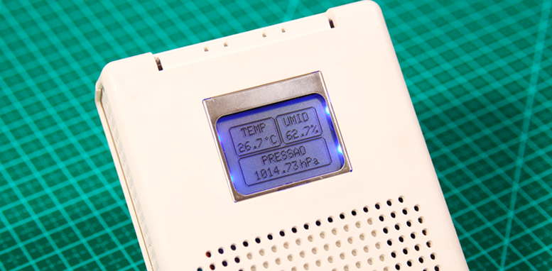

Instrumentação e Medição
Osvaldo Aranha 1, Osvaldo Aranha 2, Osvaldo Aranha 3
Projeto que utiliza sensores para medir temperatura, pressão e altitude.
FabLab e Laboratório de Física e Instrumentação do Insper
Sensor de temperatura, sensor de pressão, sensor de altitude